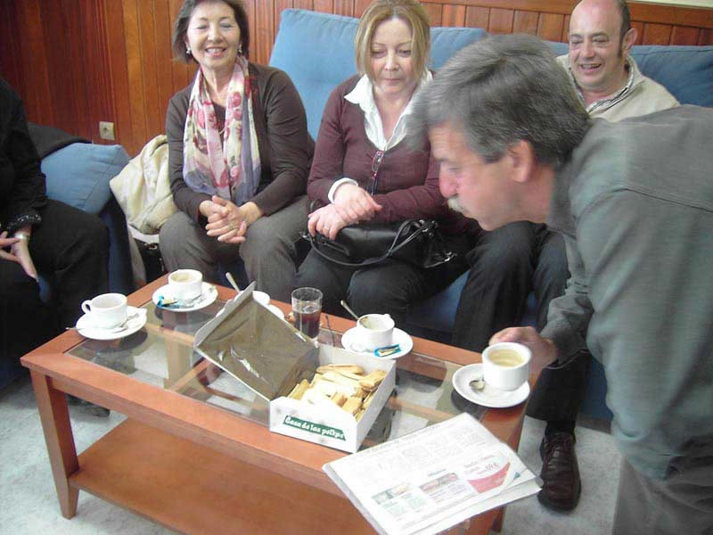

Encuentro en SantoñaAnterior | Inicio | Siguiente |
|
 Bueno, tras la comida, exquisita, por cierto, nos fuimos al bar de la residencia y, como Jesús se marchaba tras los cafeles, le felicitamos por su cumpleaños que sería al día siguiente, con unas pastitas y a falta de velas, con un cerillón que nos prestó (sin derecho a devolución) el responsable del bar. Así que, ahí le tenemos soplando la cerilla que estaba pinchada sobre una de las pastas, por si no la véis, que está toda chamuscada, la pasta no, la cerilla. Detrás Mari Carmen, Ana y Fernando. Después se le cantó el "Feliz, feliz en tu día..." y tras este emotivo y cariñoso homenaje, nos fuimos a los sofales... |